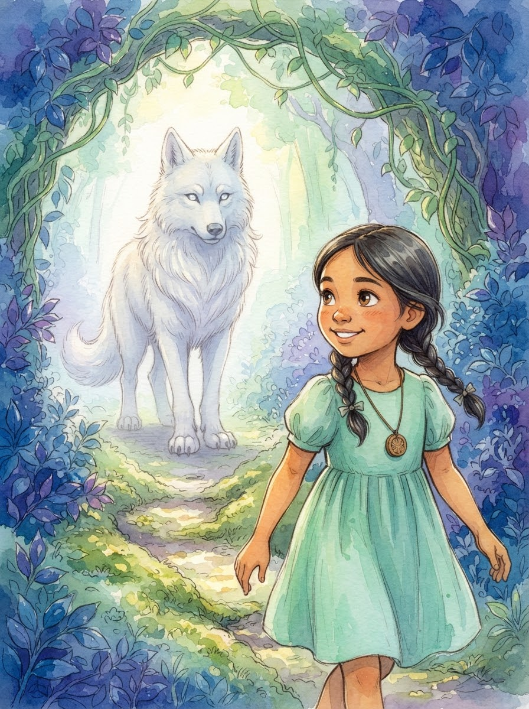
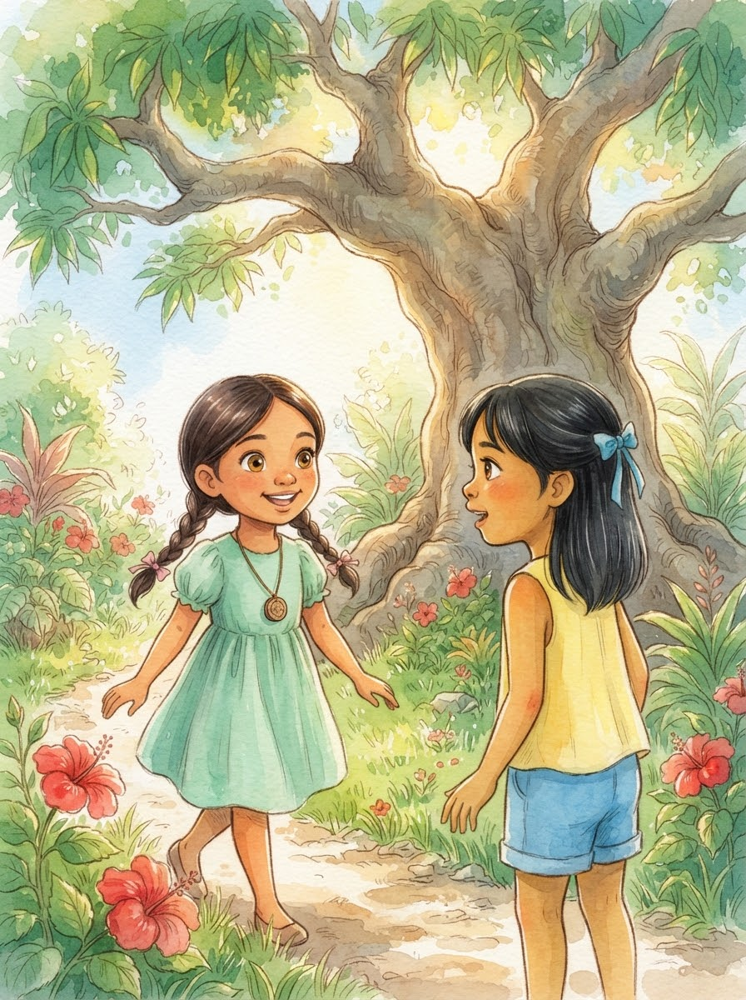
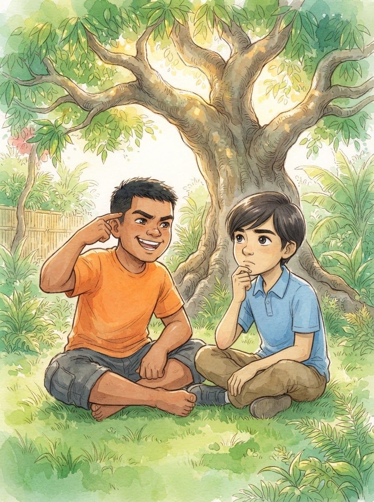
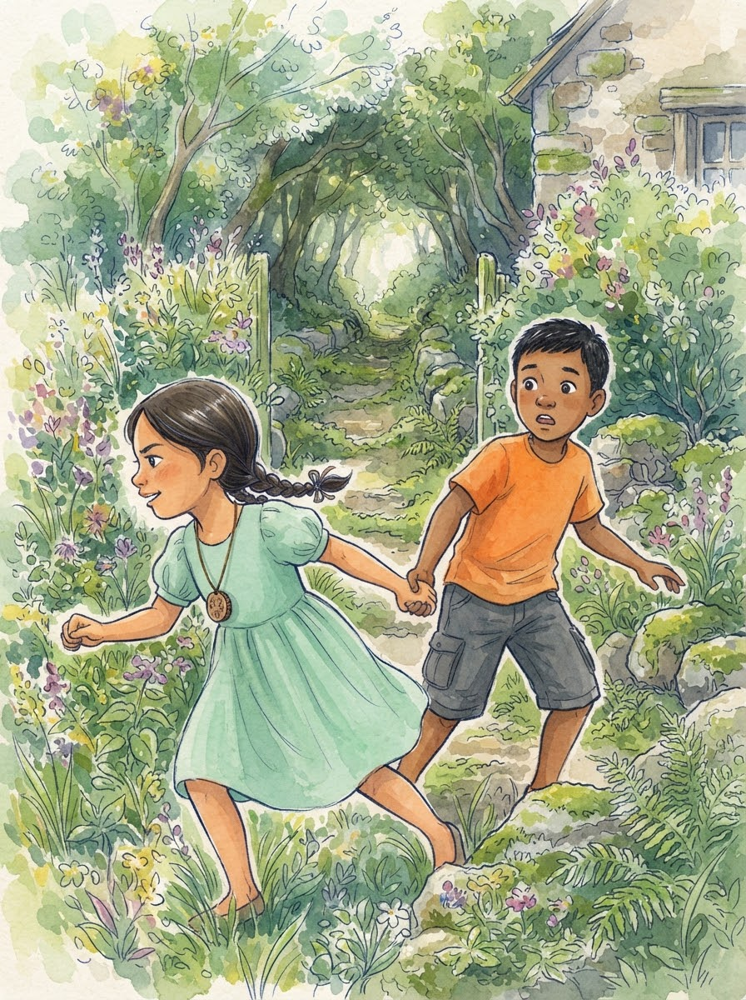
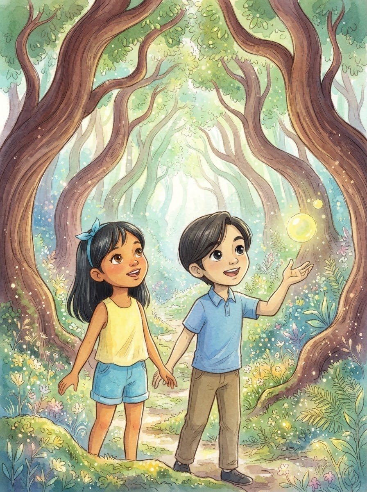
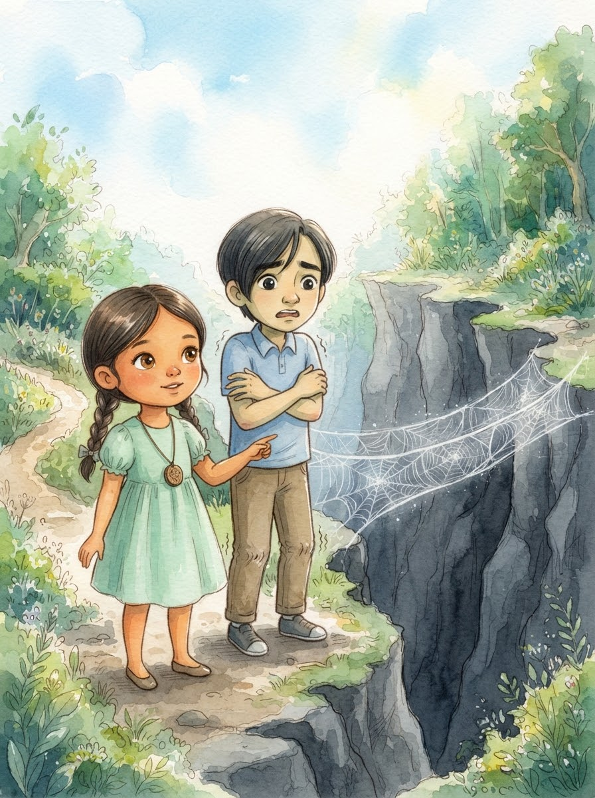
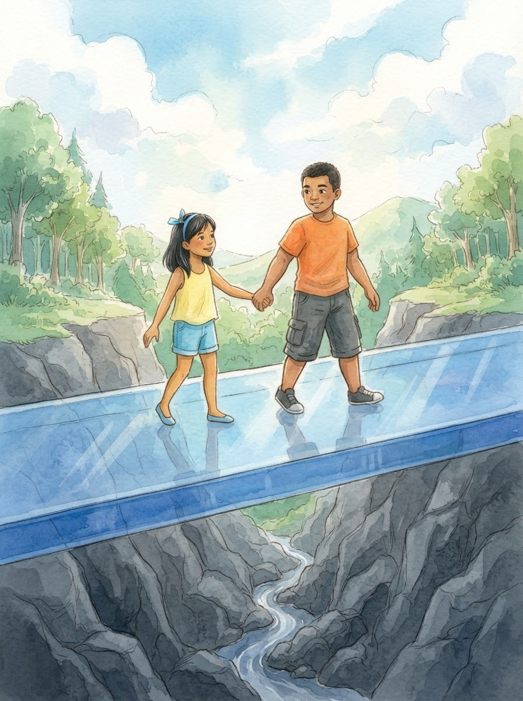
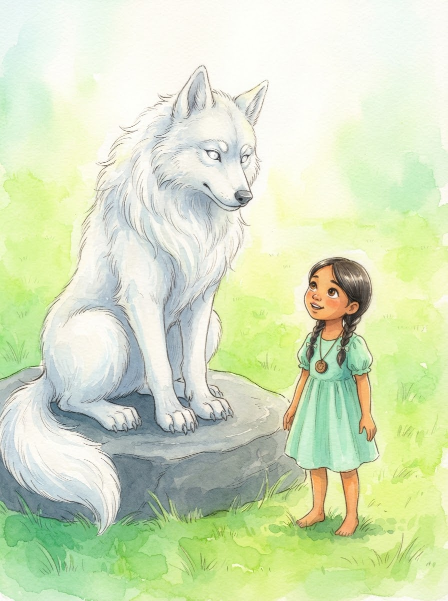
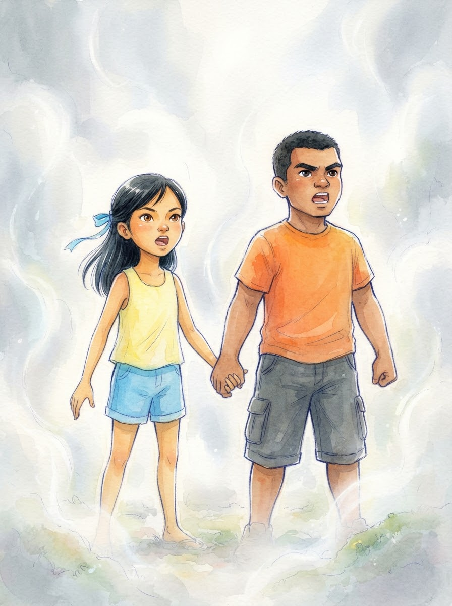
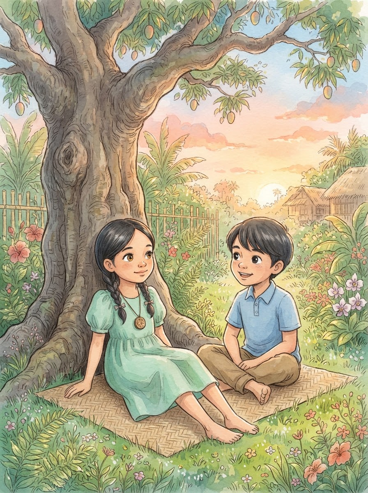

Ang Mahiwagang Landas.

Ang Mahiwagang Landas. Pagkatapos ng kanyang pakikipagsapalaran sa mahiwagang landas, natutunan ni Angel na hindi lahat ng kumikinang ay ginto at hindi lahat ng naririnig ay totoo. Baon ang aral mula sa matalinong lobong si Mulat, naglakad siya pabalik sa realidad habang ang asul at lilang kagubatan ay unti-unting naglalaho sa kanyang likuran.
Pagdating ni Angel sa ilalim ng kanilang punong mangga, nakita niya ang kanyang mga kaibigan na sina Yuna, Miel, at Matt. Sila ay abala sa paglalaro, ngunit agad silang huminto nang makita ang kakaibang kislap sa mga mata ni Angel. "Saan ka galing?" tanong ni Yuna habang lumalapit sa kanya.

Ikinuwento ni Angel ang lahat — ang gintong batis na dahon lang pala, at ang babala ni Mulat tungkol sa mga mapanlinlang na kuwento. Mukhang hindi makapaniwala sina Miel at Matt. "Magic? Isang nagsasalitang lobo?" biro ni Miel, habang si Matt naman ay tila nag-iisip nang malalim sa narinig.

"Hindi ako nagbibiro! Halikayo, ipapakita ko sa inyo!" yaya ni Angel. Hinawakan niya ang kamay ni Miel at dinala sila sa tago at makipot na daanan sa likod ng bahay. Sa isang iglap, ang mga damo ay muling yumukod, at ang mahiwagang landas ay bumukas muli para sa kanilang apat.

Pumasok ang magkakaibigan sa kagubatan kung saan ang hangin ay may amoy ng matatamis na bulaklak. Namangha sina Yuna at Matt nang makita ang mga punong tila sumasayaw. "Totoo nga!" sigaw ni Matt habang sinusubukang hawakan ang isang lumulutang na bula ng liwanag na dumaan sa harap niya.

Maya-maya, nakarating sila sa isang malalim na bangin. Ang tanging paraan upang makatawid ay isang tulay na tila gawa sa marupok na sapot ng gagamba. Natakot si Matt at ayaw nang humakbang. "Masyadong mapanganib ito," sabi niya habang nanginginig ang kanyang mga tuhod.

Naalala ni Yuna ang kwento ni Angel. "Tandaan niyo ang sinabi ni Mulat," paalala niya kay Sam. "Huwag basta maniwala sa hitsura." Pinikit nina Miel at Yuna ang kanilang mga mata at naramdaman ang ihip ng hangin. Nang muli silang tumingin, nakita nilang ang tulay ay gawa pala sa matibay at malapad na salamin na hindi lang agad napansin.

Sa dulo ng tulay, naghihintay si Mulat. "Maligayang pagbabalik, Angel. At maligayang pagdating sa iyong mga kaibigan," wika ng lobo. Napansin ni Angel na mas maliwanag ang balahibo ni Mulat ngayon. "Ang katotohanan ay mas madaling mahanap kapag ang mga kaibigan ay nagtutulungan," dagdag ng lobo.

Biglang bumalot ang isang makapal na hamog sa buong paligid, at nawala sa paningin nila ang isa't isa. Kinabahan sina Yuna at Miel dahil hindi nila makita ang daan. Ngunit sa halip na magkanya-kanya, nagsimula silang umawit at tumawag sa isa't isa upang hindi sila magkahiwalay sa gitna ng kadiliman.

Dahil sa kanilang pagkakaisa, mabilis na naglaho ang hamog at natagpuan nila ang kanilang mga sarili pabalik sa hardin. Wala na ang mahiwagang landas, ngunit hindi na sila natatakot. "Ang tunay na mahika ay ang ating pagkakaibigan at ang paghahanap ng katotohanan nang magkakasama," sabi ni Matt habang nakangiti kay Angel.